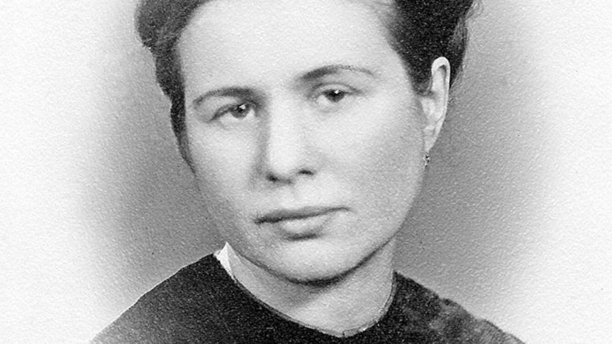
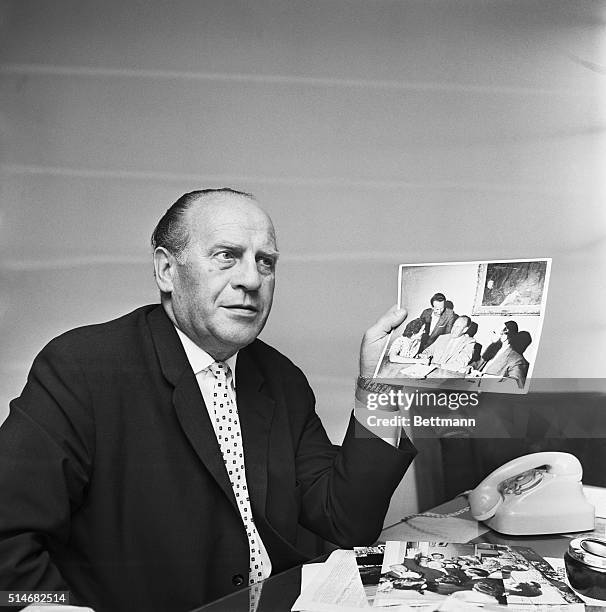

2° Guerra Mundial
Segunda Guerra Mundial foi um conflito militar global que durou de 1939 a 1945, envolvendo a maioria das nações do mundo — incluindo todas as grandes potências — organizadas em duas alianças militares opostas: os Aliados e o Eixo. Foi a guerra mais abrangente da história, com mais de 100 milhões de militares mobilizados. Em estado de "guerra total", os principais envolvidos dedicaram toda sua capacidade econômica, industrial e científica a serviço dos esforços de guerra, deixando de lado a distinção entre recursos civis e militares. Marcado por um número significante de ataques contra civis, incluindo o Holocausto e a única vez em que armas nucleares foram utilizadas em combate, foi o conflito mais letal da história da humanidade, que resultou na morte de 50-70 milhões de pessoas.
Pessoas consideradas heróis na 2° Guerra Mundial:
Irena Sendler (A enfermeira de Varsóvia):

• O que fez:
Entrava no Gueto de Varsóvia (Polônia) como enfermeira de controle sanitário.
• O essencial que ela realizou na guerra:
Retirou secretamente cerca de 2.500 crianças judias escondidas em caixas, sacos e ambulâncias. Ela anotava a identidade real de cada criança em papéis que enterrava em potes de vidro no jardim, para que pudessem reencontrar suas famílias após a guerra. Foi capturada e torturada pela Gestapo, mas nunca revelou os esconderijos.
Oskar Schindler (O Industrial Alemão):

• O que fez:
Empresário alemão e membro do partido nazista que usou suas fábricas de panelas e munições para proteger trabalhadores.
• O essencial que ele realizou na guerra:
Gastou toda a sua fortuna subornando oficiais nazistas para classificar seus funcionários judeus como "essenciais para o esforço de guerra". Ele criou a famosa "Lista de Schindler", salvando cerca de 1.200 judeus dos campos de extermínio.
Invenções importantes que vieram da guerra:
Computadores:
Máquinas como o Colossus e o ENIAC nasceram da necessidade de decodificar mensagens inimigas e calcular trajetórias balísticas, abrindo alas para a era digital
Radares e Micro-ondas:
O aperfeiçoamento do radar com o uso de magnetrons ajudou a detectar aeronaves, e a mesma tecnologia gerou por acaso o forno de micro-ondas anos depois
Wi-Fi (Salto de Frequência):
A atriz Hedy Lamarr e o compositor George Antheil criaram um sistema de comunicação sigiloso para torpedos, que serve de base para as conexões sem fio atuais
Aerossol:
Latas pressurizadas com pesticidas foram desenvolvidas para proteger os soldados de insetos transmissores de doenças nas Selvas/Ilhas do Pacífico.
Obrigado por acompanhar até aqui!